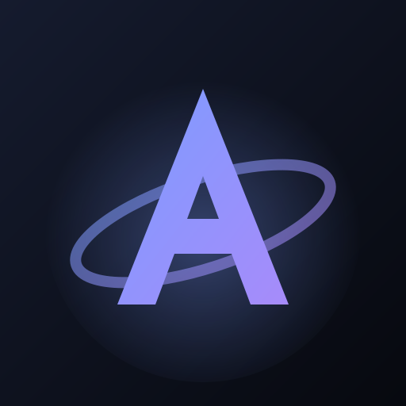

Aether
Web-Builds starten
GitHub-Token einrichten
Die Builds liegen im privaten Repo . Zum Laden brauchst du ein Fine-grained Personal Access Token mit Lesezugriff.
- Auf GitHub ein neues Fine-grained Token anlegen.
- Unter Repository access „Only select repositories“ wählen und nur auswählen.
- Unter Permissions → Repository permissions Contents, Pull requests und Actions jeweils auf Read-only setzen (Metadata kommt automatisch dazu). Für die Spielansicht allein reicht Contents.
- Ein Ablaufdatum wählen, Token erzeugen und hier einfügen.
Build wählen
Tools
Offline – Projektansicht nicht verfügbar.